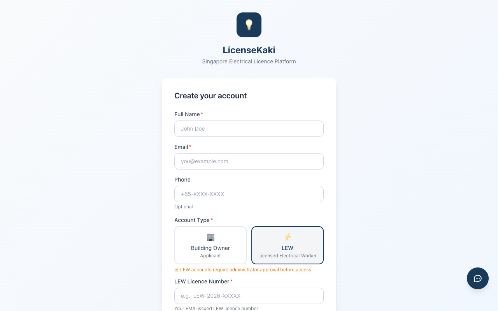
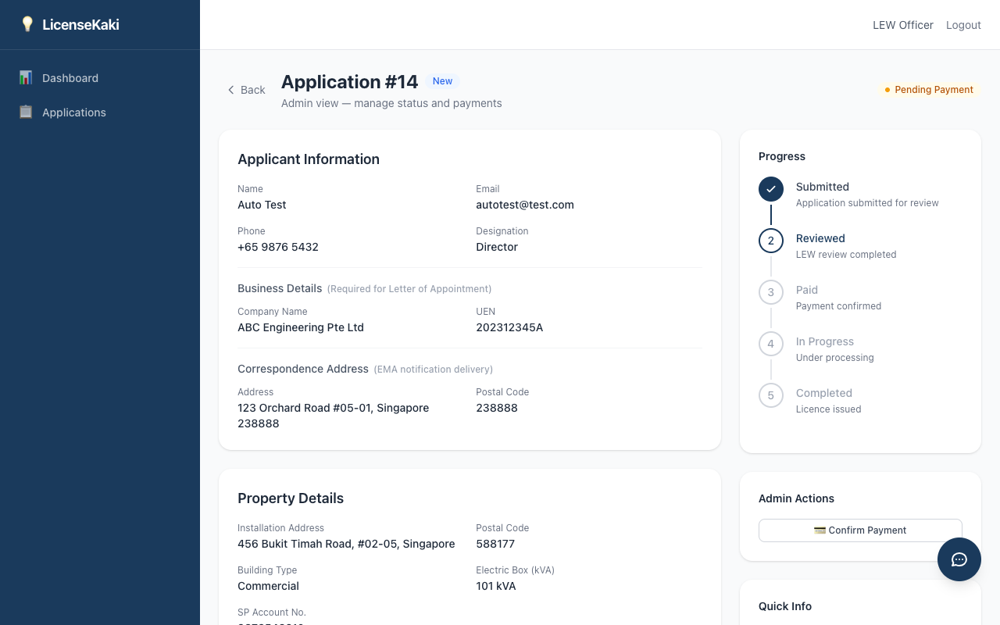

LicenseKaki
싱가포르 전기 설비 면허 플랫폼
LEW 가이드
Version 3.0
2026년 2월
LicenseKaki Pte Ltd
목차
- 1. 시작하기
- 1.1 LEW 회원가입
- 1.2 승인 대기
- 1.3 로그인
- 1.4 비밀번호 찾기
- 2. LEW 대시보드
- 3. 신청서 검토
- 4. SLD 요청 관리
- 5. LOA 관리
- 5.1 신규 면허 — LOA 자동 생성
- 5.2 면허 갱신 — LOA 업로드
1. 시작하기
1.1 LEW 회원가입

그림 1.1 — LEW 회원가입 (추가 필드)
LEW로 가입할 때 일반 회원가입 필드 외에 두 가지 추가 필드가 필요합니다:
- LEW Licence Number — EMA 발급 면허 번호 (예:
LEW-2026-XXXXX)
- LEW Grade — 등급 선택:
- Grade 7 — 45 kVA 이하
- Grade 8 — 500 kVA 이하
- Grade 9 — 400 kV 이하
1.2 승인 대기
1
등록 완료 후 계정 상태가 "Pending"으로 설정됩니다.
2
관리자(Admin)가 LEW 계정을 검토하고 승인할 때까지 대기합니다.
3
"Check Status" 버튼을 클릭하여 현재 승인 상태를 확인할 수 있습니다.
4
승인 완료 후 로그아웃 → 재로그인하면 LEW 기능이 활성화됩니다.
주의: 관리자가 승인해야 플랫폼에 접근할 수 있습니다. 승인 전까지는 대기 페이지가 표시되며, 승인 후에는 반드시 로그아웃 후 재로그인해야 변경 사항이 반영됩니다.
LEW 등급별 배정 가능 신청서:
Grade 7 — 45 kVA 이하 신청만 배정 가능
Grade 8 — 500 kVA 이하 신청까지 배정 가능
Grade 9 — 모든 신청 배정 가능
1.3 로그인
3
승인된 LEW 계정은 관리자 대시보드(/admin/dashboard)로 이동합니다.
참고: 보안을 위해 15분당 최대 5회 로그인 시도로 제한됩니다.
1.4 비밀번호 찾기

그림 1.3 — 비밀번호 찾기
1
로그인 페이지에서 "Forgot your password?" 링크를 클릭합니다.
2
가입 시 사용한 이메일 주소를 입력합니다.
3
수신된 리셋 링크를 클릭합니다 (1시간 유효).
2. LEW 대시보드
승인된 LEW는 관리자 대시보드와 동일한 화면을 공유하며, 사용자 관리 및 설정 메뉴는 표시되지 않습니다.
대시보드에서 확인할 수 있는 정보:
- 신청 통계 — 전체, 검토 대기, 처리 중, 완료 등 상태별 건수
- 최근 신청 목록 — 최근 접수된 신청서 바로가기 링크
3. 신청서 검토

그림 3.1 — LEW 신청 목록
Applications 메뉴를 통해 배정된 신청서 또는 미배정 신청서를 조회할 수 있습니다.
- 상태, 주소, 신청자명으로 검색 및 필터링
- 신청서를 클릭하면 전체 상세 정보를 확인할 수 있습니다
신청서 상세 페이지에서 검토할 수 있는 항목:
- 신청자 정보
- 건물 상세 정보
- 업로드된 서류
- 신청자 사업자 프로필
가능한 액션:
- Request Revision — 코멘트를 포함하여 수정 요청
- Approve & Request Payment — 승인 후 결제 요청

그림 3.2 — LEW 신청 상세 페이지
4. SLD 요청 관리
신청자가 SLD(Single Line Diagram) 준비 시 "Request LEW to Prepare"를 선택한 경우, LEW가 직접 SLD를 작성하고 업로드합니다.
1
신청 상세 페이지에서 SLD 도면 요청 섹션을 확인합니다. "Requested" 상태와 신청자 메모를 볼 수 있습니다.
2
설치 상세 정보를 기반으로 SLD 문서를 준비합니다.
3
"Upload SLD" 버튼을 클릭하고 파일을 업로드합니다. 필요 시 LEW 메모를 추가합니다.
4
"Confirm SLD" 버튼을 클릭하여 확정합니다. 확정 후 신청자가 다운로드할 수 있습니다.
5. LOA 관리
5.1 신규 면허 — LOA 자동 생성
1
신청 상세 페이지에서 LOA 섹션을 확인합니다. LEW가 배정되어 있는지 확인합니다.
2
신청자 프로필이 완성되어 있는지 확인합니다.
3
"Generate LOA" 버튼을 클릭합니다. EMA 공식 LOA 양식을 기반으로 PDF가 자동 생성됩니다 (LEW 이름/면허번호, 설치 주소, 신청자 정보 등 포함).
4
생성된 LOA를 다운로드하여 검토합니다. 수정이 필요하면 "Regenerate LOA"로 재생성할 수 있습니다.
5
신청자가 LOA에 서명할 때까지 대기합니다.
참고: 신청자 서명 전에는 LOA를 재생성할 수 있지만, 서명 후에는 잠기므로 수정이 불가합니다.
5.2 면허 갱신 — LOA 업로드
면허 갱신 신청의 경우 LOA 자동 생성이 불가하며, 직접 업로드해야 합니다.
1
신청 상세 페이지에서 LOA 업로드 인터페이스로 이동합니다.
2
LOA 파일을 업로드합니다 (PDF/JPG/PNG, 최대 10MB).
3
수정이 필요한 경우 "Replace LOA" 버튼으로 파일을 재업로드할 수 있습니다.
4
신청자가 LOA에 서명할 때까지 대기합니다.
참고: LOA 업로드 경로는 3가지입니다 — 신청 제출 시(Step 1), 서류 섹션, Admin/LEW의 LOA 섹션에서 업로드 가능합니다.
— LEW 가이드 끝 —
© 2026 LicenseKaki Pte Ltd. All rights reserved.